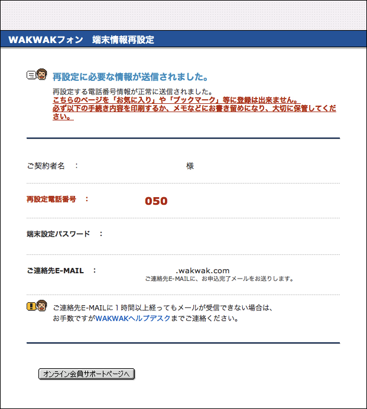
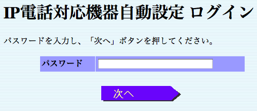
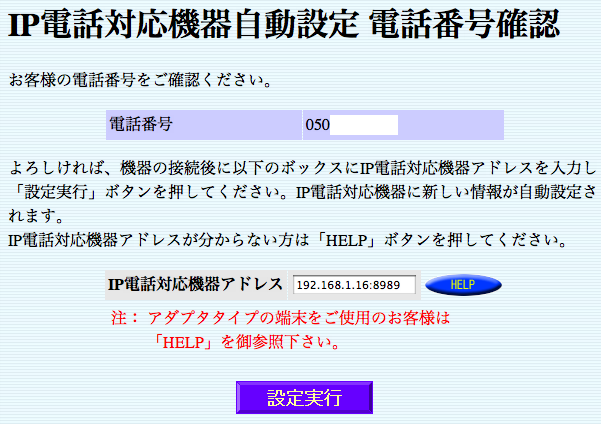

WAKWAK that is a ISP provides IP phone, the free to deal, by the name of “WAKWAK Phone”. It need to have a IP phone that is implemented “voip-setup.cgi” as root of HTTP. But I want to save VoIP’s settings into a router, so I made receive VoIP’s settings software.
Approach
Clone code from GitHub
Run receive VoIP’s settings software
Access to WAKWAK Online User Support
- Reconfigure terminal infomation
- 
- Save terminal configuration password
- Receive e-mail that is written the configuration URL
- Access the URL, maybe it likes ”https://cust.lmc.xephion.ne.jp:48443/xcpvcs/index.html?id=0123456789ABCDEF0123456789ABCDEF0123456789ABCD”
- Automatically be redirected to ”https://cust.lmc.xephion.ne.jp:48443/xcpvcs/servlet/IADURLParseAndSetServlet?id=0123456789ABCDEF0123456789ABCDEF0123456789ABCD” by JavaScript if URL above
- Input the configuration password that is saved
- 
- Input “machine:8989” and submit, “machine” is your machine’s IP address or hostname
- 
- Settings is written in hidden parameter in this page
- Look at logs of receive VoIP’s settings software, settings is outputed